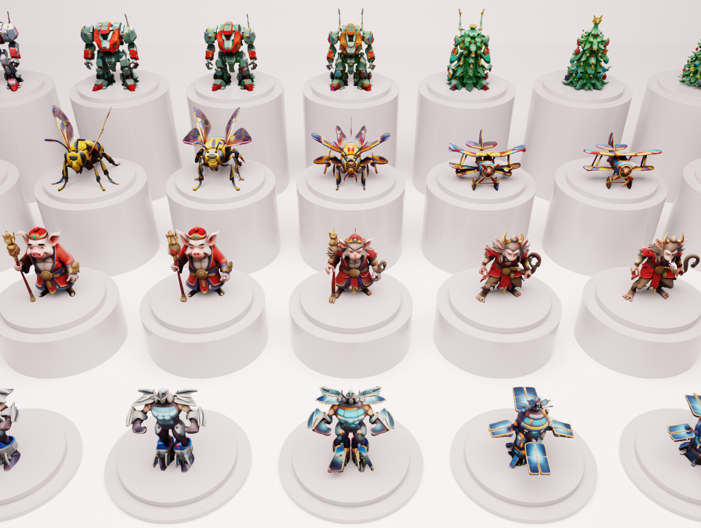
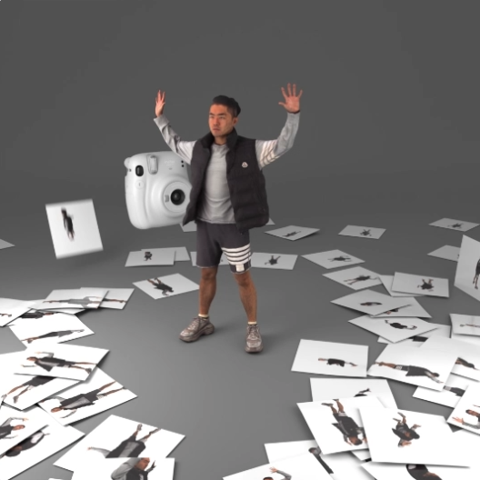
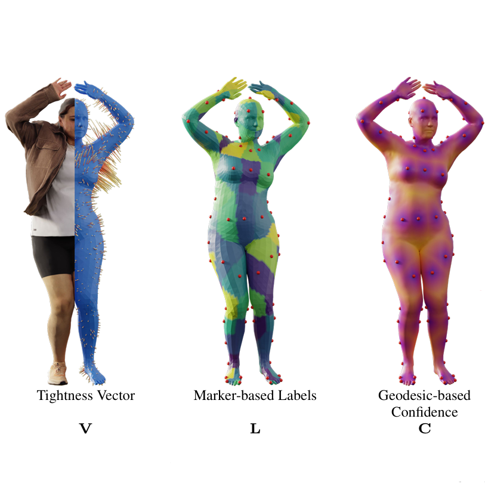
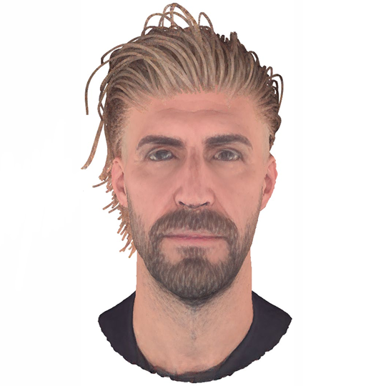
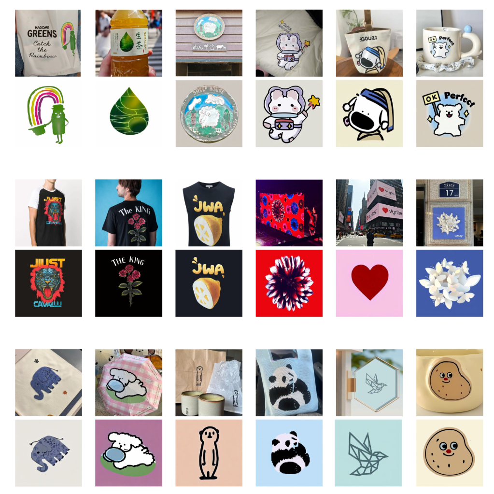
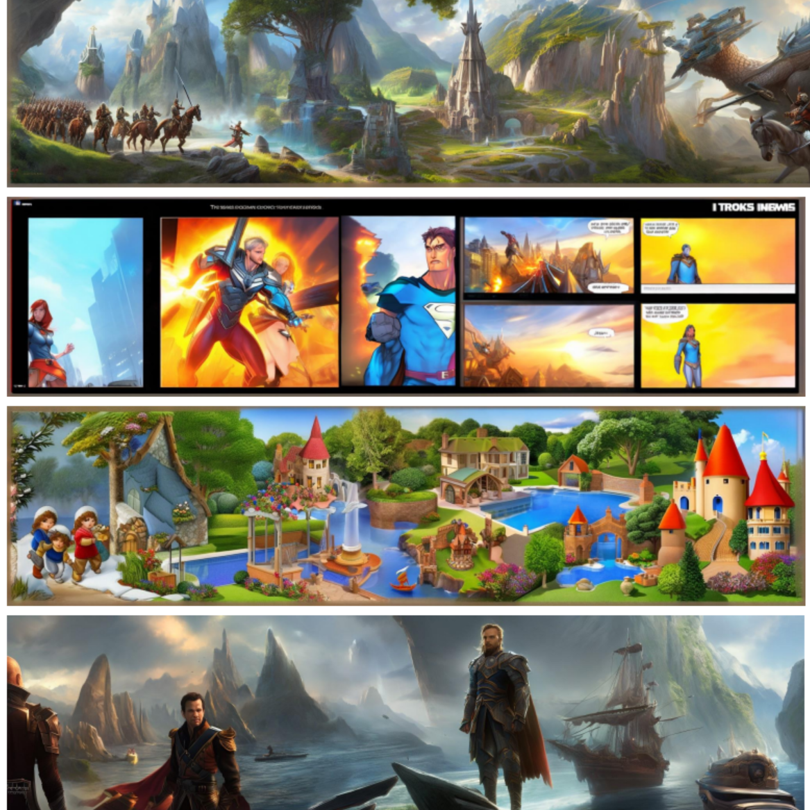
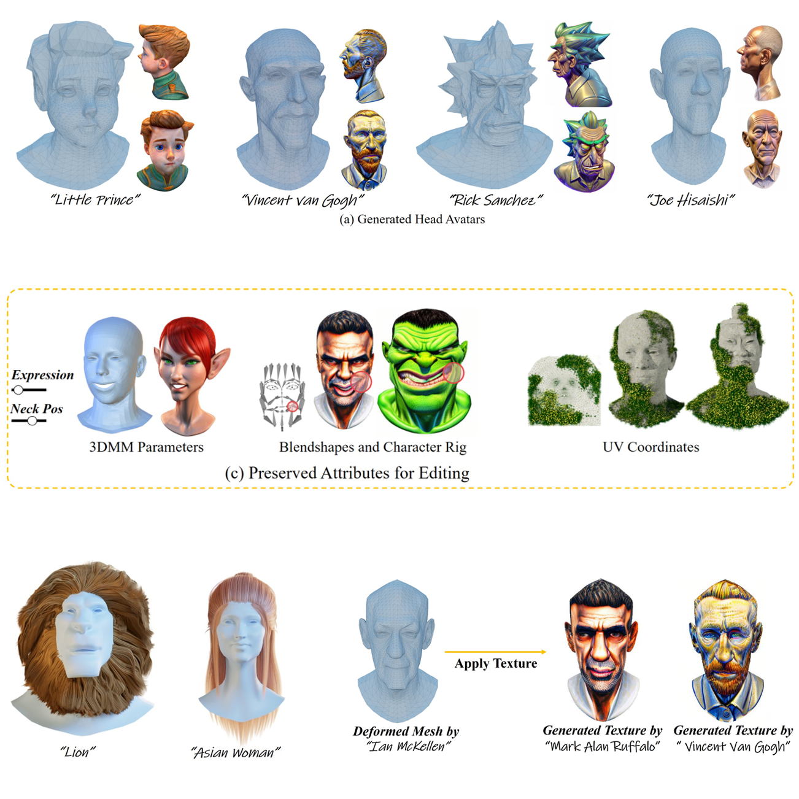
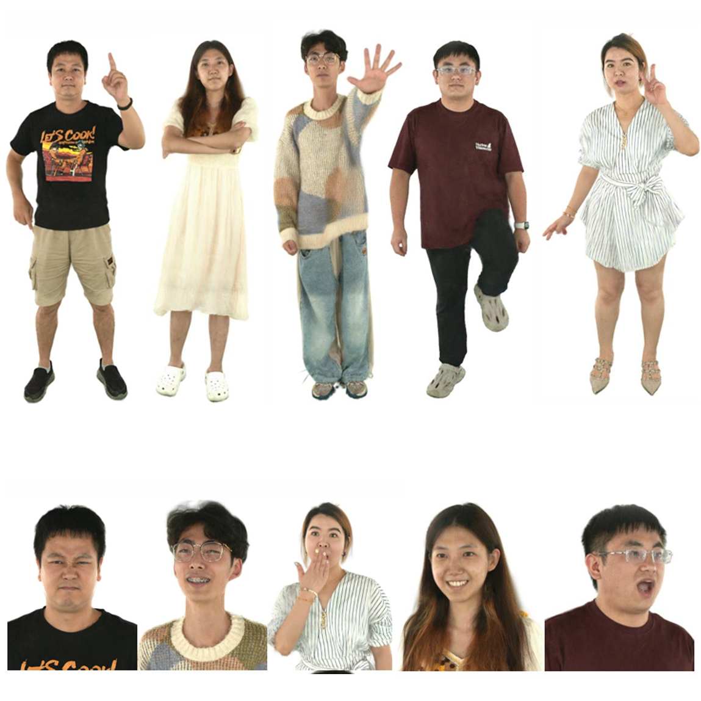
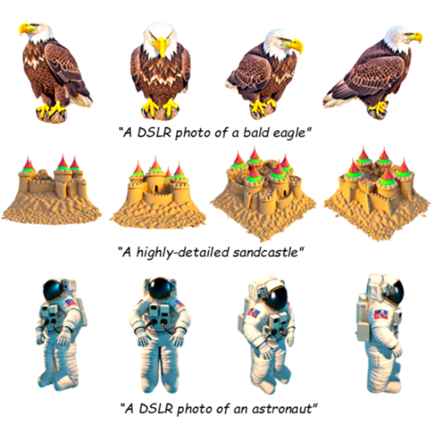

2026.02
MorphAny3D and Muses are accepted to CVPR 2026!
About Me
I am a first-year PhD student at Nanjing University, working in the PCA Lab under the supervision of Prof. Zhenyu Zhang.
I am fortunate to work with Prof. Yuliang Xiu at Endless AI Lab. I received my M.Phil degree from HKUST(GZ), advised by Prof. Zeyu Wang and Dr. Ailing Zeng, and my B.S. from Nanjing University of Aeronautics and Astronautics.
My research spans computer vision, machine learning, and computer graphics, with a focus on Human-Centric AI.
News
2026.02
MorphAny3D and Muses are accepted to CVPR 2026!
2026.01
UP2You is accepted to ICLR 2026!
2025.09
My Ph.D student life at Nanjing University begins, supervised by Prof. Zhenyu Zhang, wish me luck!
2025.07
I successfully obtain my M.Phil degree from HKUST(GZ). Thanks Prof. Zeyu Wang and Dr. Ailing Zeng for their help.
2025.06
StrandHead and ETCH are accepted to ICCV 2025! ETCH is selected as Highlight Paper!
2025.03
I start to be a visiting student at Endless AI Lab, supervised by Prof. Yuliang Xiu.
Selected Publications
Equal Contribution *, Corresponding Author †, Project Lead ⚑

Conference on Computer Vision and Pattern Recognition (CVPR), 2026
A training-free 3D morphing method that leverages the structured latent (SLAT) representation.

International Conference on Learning Representations (ICLR), 2026
Fast 3D avatar reconstruction from unconstrained photo collections.

IEEE/CVF International Conference on Computer Vision (ICCV), 2025
Body fitting for clothed human scans with equivariant tightness.

IEEE/CVF International Conference on Computer Vision (ICCV), 2025
SDS-based text-to-3D head avatar generation with hair disentanglement.

International Conference on Computer Graphics and Interactive Techniques (SIGGRAPH), 2025
Diffusion-based asset extraction from images with reward-driven optimization.

IEEE Conference on Virtual Reality and 3D User Interfaces (VR), 2025
Controllable text-to-scroll image generation for immersive storytelling.

International Conference on 3D Vision (3DV), 2025
Text-to-3D head avatar generation via expressive mesh deformation.

International Conference on 3D Vision (3DV), 2025
Full-body Gaussian avatar reconstruction with detailed expression modeling.

Pacific Conference on Computer Graphics and Applications (PG), 2024
High-fidelity text-to-3D generation with improved SDS optimization.
Academic Services
Computer Vision: CVPR, ICCV, ECCV, 3DV
Computer Graphics: SIGGRAPH, SIGGRAPH Asia, CVM, CGI